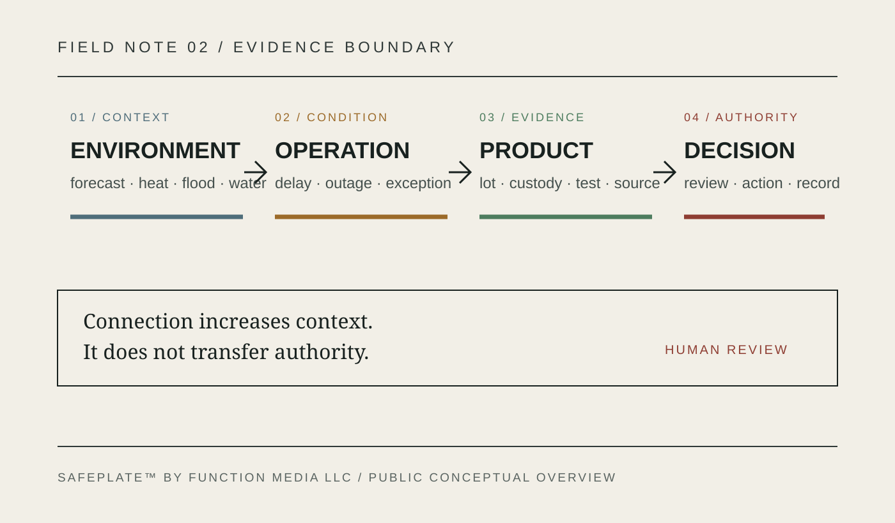
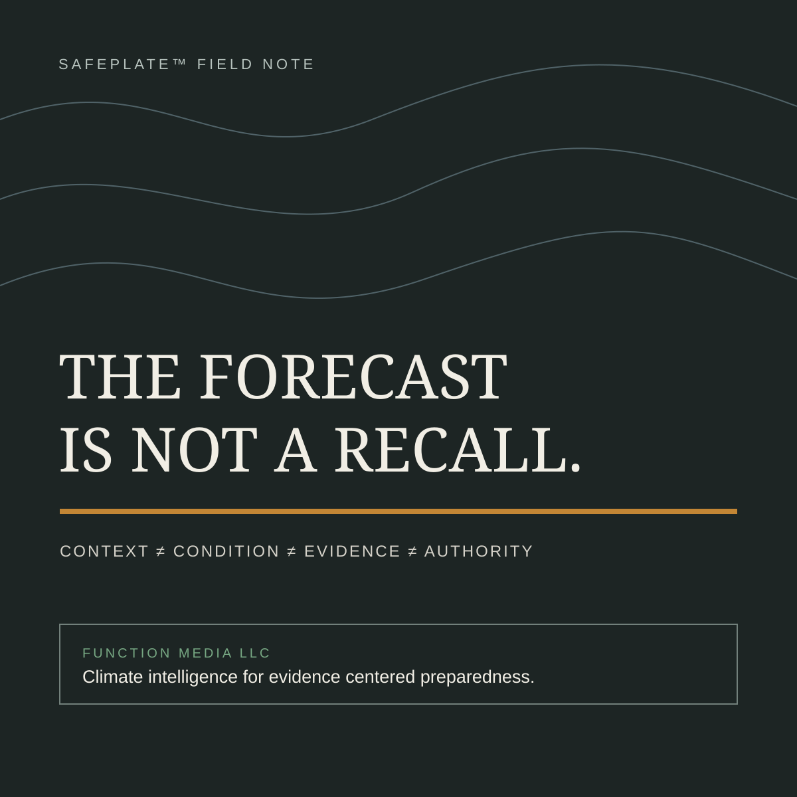

The Forecast Is Not a Recall
Climate signals belong in food-safety preparedness—but never in place of evidence
A weather forecast can tell an institution that conditions are changing. It cannot tell a regulator that a particular lot is contaminated.
That boundary sounds obvious. In practice, it is easy to blur.

Food systems operate through environments that never hold still. Heat changes refrigeration demand. Flooding changes access, water conditions, field exposure, and transportation routes. Drought alters water availability and may increase reliance on sources with different quality profiles. Ocean conditions influence marine ecosystems. El Niño and La Niña can shift seasonal weather patterns across regions, but no two events produce identical local consequences.
These are not abstract concerns. The U.S. Food and Drug Administration advises planning for food and water safety before power outages and floods. The U.S. Department of Agriculture’s Climate Hubs organize information about drought, heat stress, pests, disease, water, and climate variability. The Food and Agriculture Organization has identified pathways through which changing environmental conditions can affect biological and chemical food hazards.
The mistake is to treat that context as a verdict.
A forecast changes the questions
Suppose a forecast indicates an elevated likelihood of extreme heat across a produce corridor. That information does not prove a temperature excursion in any shipment. It does change the questions a responsible operation may want to ask:
- Which facilities and routes are most exposed?
- Which commodities are most sensitive to additional dwell time?
- Are refrigeration, backup power, and receiving procedures ready?
- Which records would be needed if conditions deteriorate?
- Who has authority to increase monitoring or change an operating plan?
The forecast is not the evidence of failure. It is a reason to prepare the evidence path.
That distinction matters because climate data and food-safety records describe different things. A seasonal outlook may describe probability across a region. A temperature logger describes conditions at a particular point in a shipment. A receiving record documents an institutional observation. A laboratory result addresses a sampled material under a defined method. A regulator’s notice carries a different authority again.
Combining those records can improve situational awareness. Collapsing them into one score can hide their limits.
Four layers that should remain separate
1. Environmental context
This layer includes observed weather, forecasts, flood or drought conditions, heat, water stress, and other relevant environmental signals. It helps frame exposure, but it does not establish a food-safety outcome.
2. Operational condition
This is what happened within the food system: a route delay, refrigeration fault, power interruption, receiving exception, water-source change, damaged packaging, or facility closure. These records narrow the inquiry from a broad condition to an operational event.
3. Product evidence
Lot identity, chain-of-custody records, temperature history, inspection findings, laboratory results, supplier records, and distribution links provide product-specific evidence. Their provenance and timing must remain visible.
4. Authorized determination
A qualified person or agency decides what action is permitted and required. The system may organize evidence, detect conflicts, or surface a signal. It does not replace regulatory authority, professional judgment, or legally required procedure.
Keeping these layers distinct prevents a forecast from silently becoming an accusation. It also prevents an important environmental signal from disappearing merely because no incident has yet been confirmed.

El Niño is a context, not a cause label
El Niño is especially useful for explaining this discipline. NOAA describes El Niño as part of a coupled ocean-atmosphere pattern that affects weather and marine conditions. Its effects vary by region and episode. A global climate label therefore cannot be attached mechanically to a local food-safety event.
The responsible question is not, “Did El Niño cause this problem?” It is, “Did the conditions associated with this period change an exposure pathway, an operating constraint, or the information needed for review?”
That question can lead to practical preparedness:
- confirming backup power and cold-storage contingencies before heat or storms;
- identifying facilities and routes with limited alternatives;
- tracking changes in water source or quality;
- preserving event, report, and ingestion times separately;
- documenting why monitoring or inspection priorities changed;
- distinguishing provisional intelligence from confirmed findings.
Preparedness is strongest when it leaves an auditable trail. A later reviewer should be able to see what was known, when it was known, which source supplied it, what action followed, and who authorized that action.
The architecture is less important than the behavior
SAFEPLATE™ by Function Media LLC is being developed as food-safety intelligence infrastructure for authorized institutions. At a public level, the system concept connects multi-source ingestion and normalization; identity and entity resolution; evidence-graph construction; provenance and lineage preservation; confidence-aware signal detection; role-based access; human review; and immutable auditability.
The critical behavior is not that every source produces one answer.
Environmental observations, forecasts, operational records, product evidence, and official determinations must retain their own meanings. Confidence, freshness, authority, and relevance should not be blended into a universal risk score. A useful system can connect them while preserving the differences that a human reviewer needs.
For example, a flood alert may increase attention to facilities in an affected geography. A receiving exception may connect that context to a specific shipment. A chain-of-custody record may identify the relevant lot. A laboratory result may confirm or rule out a particular concern. At every step, the evidence becomes more specific—and the authority to act remains explicit.
Preparedness without panic
Public communication often compresses uncertainty. “Extreme weather threatens food safety” is memorable, but it can imply a direct and universal pathway that does not exist. The more defensible message is also more useful:
Changing environmental conditions can alter food-safety exposure, operating constraints, and monitoring needs. Institutions should prepare the records, roles, and review processes required to recognize those changes early and respond proportionately.
That is not prediction theater. It is operational readiness.
The forecast is not a recall. It is not a laboratory result, inspection finding, or regulatory determination. It is one source of context in a larger evidence system.

When that context is connected carefully—without stripping away provenance, uncertainty, or authority—it can help institutions ask better questions before a disruption becomes a crisis.
Working with Function Media: Function Media LLC considers selected paid institutional pilots, purpose-built systems, sponsored development, licensing, integration, and strategic partnerships where mission, evidence, and governance requirements align: https://function-media-intelligence.netlify.app/partnerships.html
Source notes
- U.S. Food and Drug Administration, “Food and Water Safety During Power Outages and Floods”: https://www.fda.gov/food/buy-store-serve-safe-food/food-and-water-safety-during-power-outages-and-floods
- NOAA, “El Niño and La Niña”: https://www.noaa.gov/education/resource-collections/weather-atmosphere/el-nino
- USDA Climate Hubs: https://www.climatehubs.usda.gov/
- FAO, “Climate change and food safety impacts”: https://openknowledge.fao.org/server/api/core/bitstreams/0aa558d4-57c7-498d-87f7-b9e37577882f/content/src/html/climate-change-and-food-safety-impacts.html